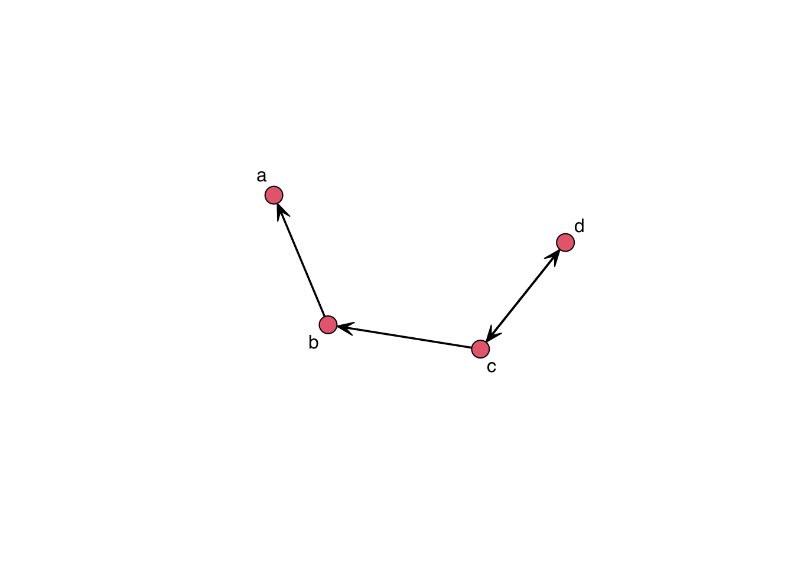

8.3 Reading a network
The first step to analyzing network data is to read it in. Many times you’ll find data in the form of an adjacency matrix. Other times, data will come in the form of an edgelist. Another common format is the adjacency list, which is a compressed version of an edgelist. Let’s see how the formats look like for the following network:
example_graph <- matrix(0L, 4, 4, dimnames = list(letters[1:4], letters[1:4]))
example_graph[c(2, 7)] <- 1L
example_graph["c", "d"] <- 1L
example_graph["d", "c"] <- 1L
example_graph <- as.network(example_graph)
set.seed(1231)
gplot(example_graph, label = letters[1:4])
- Adjacency matrix a matrix of size \(n\) by \(n\) where the \(ij\)-th entry represents the tie between \(i\) and \(j\). In a directed network, we say \(i\) connects to \(j\), so the \(i\)-th row shows the ties \(i\) sends to the rest of the network. Likewise, in a directed graph, the \(j\)-th column shows the ties sent to \(j\). For undirected graphs, the adjacency matrix is usually upper or lower diagonal. The adjacency matrix of an undirected graph is symmetric, so we don’t need to report the same information twice. For example:
## a b c d
## a 0 0 0 0
## b 1 0 0 0
## c 0 1 0 1
## d 0 0 1 0- Edge list a matrix of size \(|E|\) by \(2\), where \(|E|\) is the number of edges. Each entry represents a tie in the graph.
## [,1] [,2]
## [1,] 2 1
## [2,] 3 2
## [3,] 3 4
## [4,] 4 3
## attr(,"n")
## [1] 4
## attr(,"vnames")
## [1] "a" "b" "c" "d"
## attr(,"directed")
## [1] TRUE
## attr(,"bipartite")
## [1] FALSE
## attr(,"loops")
## [1] FALSE
## attr(,"class")
## [1] "matrix_edgelist" "edgelist" "matrix" "array"The command turns the network object into a matrix with a set of attributes
(which are also printed.)
- Adjacency list This data format uses less space than edgelists as ties are grouped by ego (source.)
## [[1]]
## + 1/4 vertex, from 67e5bad:
## [1] 2
##
## [[2]]
## + 2/4 vertices, from 67e5bad:
## [1] 1 3
##
## [[3]]
## + 3/4 vertices, from 67e5bad:
## [1] 2 4 4
##
## [[4]]
## + 2/4 vertices, from 67e5bad:
## [1] 3 3The function igraph::as_adj_list turns the igraph object into a list of
type adjacency list. In plain text it would look something like this:
2
1 3
2 4 4
3 3 Here we will deal with an edgelist that includes node information.
In my opinion, this is one of the best ways to share network data. Let’s read
the data into R using the function read.csv:
We now have two objects of class data.frame, edges and nodes. Let’s inspect
them using the head function:
## V1 V2
## 1 1 64
## 2 2 41
## 3 2 106
## 4 3 61
## 5 4 85
## 6 4 138## vertex.names race age
## 1 1 non-white 10
## 2 2 white 10
## 3 3 white 17
## 4 4 non-white 14
## 5 5 non-white 17
## 6 6 non-white 14It is always important to look at the data before creating the network. Most common errors happen before reading the data in and could go undetected in many cases. A few examples:
Headers in the file could be treated as data, or the files may not have headers.
Ego/alter columns may show in the wrong order. Both the
igraphandnetworkpackages take the first and second columns of edgelists as ego and alter.Isolates, which wouldn’t show in the edgelist, may be missing from the node information set. This is one of the most common errors.
Nodes showing in the edgelist may be missing from the nodelist.
Both igraph and network have functions to read edgelist with a corresponding
nodelist; the functions graph_from_data_frame and as.nework, respectively. Although
, for both cases, you can avoid using a nodelist, it is highly recommended as then
you will (a) make sure that isolates are included and (b) become aware of possible
problems in the data. A frequent error in graph_from_data_frame is nodes present
in the edgelist but not in the set of nodes.
Using as.network from the network package:
As you can see, both syntaxes are very similar. The main point here is that the more explicit we are, the better. Nevertheless, R can be brilliant; being shy, i.e., not throwing warnings or errors, is not uncommon. In the next section, we will finally start visualizing the data.